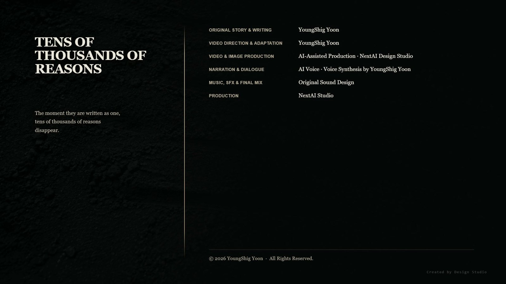

I. The Time Remaining
The fleet had withdrawn, taking the coordinates with it.
Las tried to calculate how much time that had bought them, then stopped. To calculate it, he would have to know how quickly the other side could reestablish its reference, and he no longer had access to their system.
The settlement had been moving for three days. The Chiwoo survivors above had left their markers standing instead of pulling them up. A marker was something you left behind, they said, not something you moved. The people of the lower village carried their belongings along the ridge to avoid the collapsed valley.
Las's exoskeleton remained split. Repairing it would require rebuilding the alignment layer in the storehouse, and rebuilding the alignment layer would reveal their position again. He left it as it was.
Ara sat where the observatory had stood. The observatory was gone. Only its place remained.
Ara: “You keep looking down.”
Las: “The route went down.”
Ara: “What route?”
Las: “The route the child took.”
Ara lifted her head.
Las: “Your resonance network passed through my alignment layer. But the space it passed through isn't one I know.”
II. The Way Down
The entrance lay beneath a collapsed watercourse.
Over seventeen years, Las had surveyed the underground mineral strata in this region three times. All three times, he had missed this structure. Its signal could not be distinguished from the mineral layer.
There were no curves in the descending passage. It ran straight down, turned at an angle, then continued straight down again. It was the Rene way.
That troubled Las.
The only things the Rene had built on Earth were six storehouses and one observatory. He had drawn every plan himself, and all of them stood above ground.
He placed a hand on the passage wall. The finish was not rough. Nothing caught against his palm. A surface finished to this degree meant the structure had been completed all the way to the arrival layer.
Las: “Who built this?”
No one answered. He was not a man who talked to himself. When he realized what he had done, he stopped for a moment.
At the end of the passage, the space opened.
It had three layers.
An outer alignment layer, an intermediate load-bearing layer, and an inner arrival layer where nothing should have been. It was the same structure as the gates of Maldek, the same structure as the ruins on Earth, the same structure Las had drawn all his life.
But this structure had not been built for arrival.
The entire wall of the outer alignment layer was engraved.
III. The Wall
Las read it with his hands.
Rene specification lines were not read with the eyes. Their values lay in the depth of the lines, the spaces between them, and the angles at which they crossed. The values entered through his fingertips as they moved. It was not reading. It was measuring.
The first layer was a coordinate system. Maldek reference. Old.
The second layer was a reception record. It recorded only how many had been received, not what had been received. The number was large. Las passed over that section twice.
The command was in the third layer.
A Rene command was not a sentence. It was a direction: a single axis engraved into the alignment layer, accompanied by the load calculations arranged along it. Reading it did not tell you what to do. It told you where to go.
There was only one axis engraved into this wall.
Las followed it to the end with his fingertips. He went halfway around the wall. The axis did not branch, did not waver, and allowed no exception.
Rendered in words, its value was one line.
The enemy is this way.
Las took his hand from the wall.
This was the command that had begun the Maldek War. It had not been issued by the Martian War Council. The council must have made its decision on the authority of this wall. The evidence had come first; the decision, afterward.
Then who had engraved the wall?
He returned to the second layer. The reception record. The layer that recorded only how many had been received.
He counted the number again.
IV. The Child Who Followed Them Down
Yunseo stood at the end of the passage.
Ara had a hand on the child's shoulder. She was not merely touching her. She was holding on. It was the shape of a hand that could not let go.
Las: “Why did you bring her?”
Ara: “If I hadn't, she would have come alone.”
Yunseo had not slept for three days. Since emerging from the resonance network, the direction had never completely left her. She did not call it painful. She called it loud.
Ara: “It's coming from down here. What she's been hearing for three days.”
Las pointed to the wall.
Las: “There's only one thing engraved here. One axis. One direction. Nothing here should be loud.”
Ara: “That's what you read.”
Yunseo took one step toward the wall.
Ara did not release her shoulder.
Yunseo: “I'm all right.”
Ara: “No, you're not.”
Yunseo: “Last time I went inside. This time I'll listen from outside.”
It was not a distinction a twelve-year-old should have been able to make. The child had learned it over three days.
V. Tens of Thousands
Yunseo placed her hand on the wall.
It was the same place Las had read with his own hand. The second layer, where the reception record had been engraved.
For a moment, the child said nothing.
Then she began to speak.
Yunseo: “The water is rising, so go upstairs.”
Yunseo: “Send the child first.”
Yunseo: “The third passage has collapsed.”
Yunseo: “The south door is still open.”
Yunseo: “Put your shoes on before you leave.”
Yunseo: “There's a room the water hasn't reached yet.”
Yunseo: “There are too many people upstairs.”
Yunseo: “Leave me behind.”
Yunseo: “Mother is still inside.”
Yunseo: “Father will be here soon.”
Yunseo: “Wait here.”
Yunseo: “Don't wait.”
The two sentences came out together. The child did not find that strange.
Yunseo: “If you run now, you can make it.”
Yunseo: “Don't run. You'll fall.”
Yunseo: “Don't let go.”
Yunseo: “This isn't the way.”
Yunseo: “There's something I left behind.”
Yunseo: “It's not too late.”
Yunseo: “It's too late.”
Las took his hand from the wall.
Yunseo: “We're here.”
Yunseo drew a breath.
Not one message was the same. When one ended, another came, and when that ended, another followed. The child's voice did not grow louder. Only her breaths grew shorter.
Contradictory words stood beside one another. Wait and don't wait had entered the wall with equal weight.
Ara's grip tightened on the child's shoulder.
Ara: “How many?”
Yunseo: “I can't count them.”
Las had already counted the number in the second layer.
There were tens of thousands.
He had not known what the number counted. Because it was a reception record, he had assumed it counted signals. Rene instruments counted signals; they did not preserve their contents.
But the child was hearing the contents.
Las: “Tell me what's engraved in the layer below.”
Yunseo: “It isn't engraved.”
Las: “It is. I read it.”
Yunseo: “That's what you read.”
Yunseo took her hand from the wall. She drew a deep breath.
Yunseo: “None of the people here said that.”
Las: “Said what?”
Yunseo: “That the enemy is this way. Nobody said that.”
Las looked at the wall.
Tens of thousands had entered. One had been engraved.
Chiwoo resonance held many directions. This way is dangerous. That way is still safe. It is too late here. Each person sent the direction they could see from where they stood. Tens of thousands of people meant tens of thousands of directions.
A Rene alignment layer engraved only one axis.
To engrave many as one, something had to be discarded. The specification determined how. It retained the direction with the greatest overlap and treated everything else as error.
Among tens of thousands of different danger signals, one direction overlapped most often. It was the direction from which the danger was coming.
The wall had engraved it this way.
The enemy is this way.
No one had said that.
VI. My Hand
Las returned to the outer alignment layer.
He read the specification lines again with his fingertips, this time reading their form instead of their values: the angles at which they bent, the treatment of their intersections, the spacing of repeated sections.
There was more than one Rene specification. They differed by generation and by designer. Even when they engraved the same value, different hands made different lines.
These were lines he knew.
It was the method he used when building gates. At an intersection, one line was broken and the other allowed to pass over it. The broken line was always placed beneath. That way, someone could later tell by touch which line was the reference.
He had devised the method at nineteen. No one had taught it to him.
Las: “This is my specification.”
Ara: “You built it?”
Las: “No.”
Ara: “Then?”
Las: “Someone built it using the method I created.”
He had never made a weapon. He had built gates, drawn plans, and established specifications. Those specifications had been made for arrival.
A specification did not decide what would be engraved. It decided how it would be engraved.
Once the how was fixed, it also fixed what could be engraved.
With a grammar that could engrave only one thing, you could write only one.
Las stood with his hand on the wall. Old circuitry showed through the split in his exoskeleton. No one looked at it.
VII. Not Written Down
Ara: “We have to tell Mars.”
Las: “And then what happens?”
Ara: “They'll learn there was no basis for the war.”
Las: “And after that?”
Ara did not answer.
Las answered for her.
Las: “The Rene split in two. Those who built the wall and those who never knew. Then they kill each other.”
Ara: “So we cover it up?”
Las: “I'm not saying we cover it up.”
Las took out his measuring device. It was the only thing still working inside his split exoskeleton.
To leave a record, he had to write it as values. Every Rene record was made of values. A value was an axis, and an axis was one.
He tried to record what he had discovered. And in the instant he tried, he understood.
This truth, too, would be written as one.
If he wrote that there had been tens of thousands, those tens of thousands would become one sentence again. He would do what the wall had done.
Las switched off the device.
Ara: “Why aren't you recording it?”
Las: “If I do, it becomes the same thing.”
Ara: “Then nothing remains.”
Las: “The wall remains.”
He did not destroy the wall. Nor did he correct it. He left the single engraved axis and the uncountable number in the layer above it exactly as they were.
If he left it wrong, someone might one day discover the wrongness. If he corrected it, no one would ever discover it.
Yunseo sat at the entrance to the passage.
The child did not write down a single thing she had heard from the wall. Instead, she drew a short line in the dirt with her finger. One line, then another a little distance away, then another.
She did not count how many she drew.
Ara sat beside her.
Ara: “What are those?”
Yunseo: “They're not numbers.”
Ara: “Then what?”
Yunseo: “One for each person.”
The wind entered the passage and erased some of the lines in the dirt. The child did not draw them again. The erased lines were among the lines she had drawn.
From above came the sound of people carrying their belongings.
Las touched the wall one last time. Nothing caught against his fingertips. It was a well-finished wall.
He looked at his own hand.
